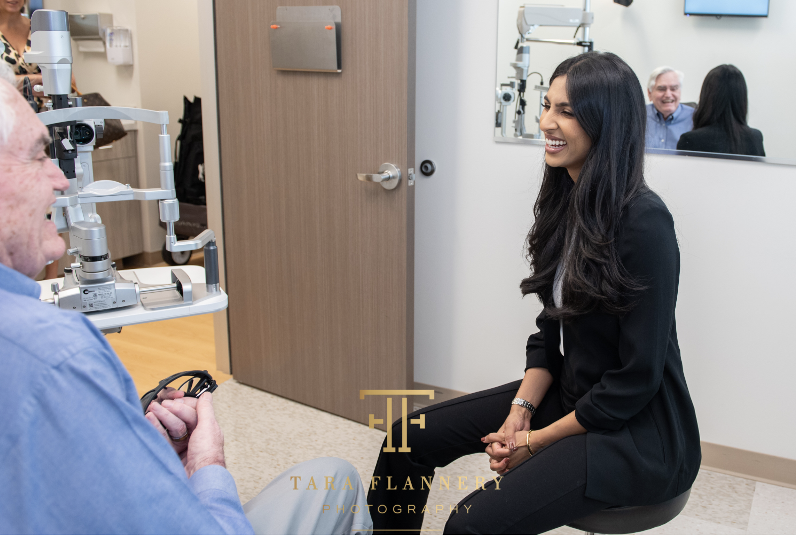

Vision Correction
Refractive Lens Exchange (RLE) — also called Clear Lens Extraction — replaces your eye's natural lens with a premium IOL to correct nearsightedness, farsightedness, or presbyopia. Ideal for patients not suited for LASIK.

Understanding RLE
RLE uses the same proven surgical technique as cataract surgery to remove a clear but poorly functioning natural lens and replace it with a premium intraocular lens (IOL). This addresses refractive errors — nearsightedness, farsightedness, and presbyopia — while simultaneously eliminating any chance of developing cataracts in the future.
Because RLE replaces the natural lens entirely, patients who undergo the procedure will never need cataract surgery. It is an ideal solution for patients in their 40s, 50s, and beyond who are not good candidates for laser vision correction.
The premium IOL implanted during RLE is designed to last a lifetime — no retreatments or replacements required.
Because your natural lens is removed, cataracts can never develop in that eye — a significant long-term benefit.
Choose from monofocal, multifocal, EDOF, or toric IOLs to match your lifestyle and visual goals.
Thin corneas, high prescriptions, or presbyopia — RLE succeeds where laser procedures cannot.
The RLE Process
From evaluation to recovery, here is what the Refractive Lens Exchange process looks like at Soni Vision Institute.
A thorough eye exam including corneal mapping, biometry, and a detailed review of your prescription history and visual goals. We determine whether RLE is the optimal solution for your eyes.
You and your surgeon will choose the premium IOL that best fits your lifestyle — from multifocal lenses that reduce glasses dependence to toric IOLs that correct astigmatism simultaneously.
The outpatient procedure takes under 20 minutes per eye. Using the same technique as cataract surgery, your natural lens is gently removed and the premium IOL is implanted through a micro-incision.
Most patients notice improved vision within 24–48 hours. Full stabilization typically occurs within 4–6 weeks. Your surgeon sees you at every follow-up — not a rotating provider.
Common Questions
Everything you need to know about Refractive Lens Exchange — answered clearly and honestly.
RLE is ideal for patients in their 40s, 50s, and 60s who have significant refractive errors (nearsightedness, farsightedness, or presbyopia) and are not suitable candidates for LASIK or PRK. Patients with thin corneas, high prescriptions, or early presbyopia are often excellent RLE candidates. A comprehensive evaluation is required to confirm candidacy.
RLE uses the identical surgical technique as cataract surgery — phacoemulsification with IOL implantation. The key difference is that in RLE, the natural lens being removed is clear (not yet a cataract). The surgical process, recovery, and IOL options are essentially the same. The distinction is primarily one of purpose: cataract surgery removes a clouded lens, while RLE removes a clear but optically imperfect lens to improve vision and prevent future cataracts.
No. Because RLE replaces your natural lens entirely with an artificial IOL, cataracts cannot develop in that eye. The synthetic IOL does not cloud or change the way a natural lens does. This is one of the most compelling long-term benefits of RLE — you permanently eliminate the possibility of needing cataract surgery later in life.
Schedule your Refractive Lens Exchange evaluation with Houston's highest-rated surgical team.